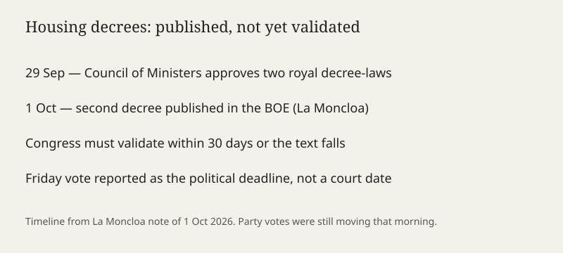

Madrid · vivienda · 1 de octubre de 2026
El Gobierno publica en el BOE el segundo decreto de alquileres, pendiente de convalidación

Lo que coinciden las mesas
La Moncloa publicó el 1 de octubre de 2026 una nota sobre dos reales decretos-ley aprobados por el Consejo de Ministros del 29 de septiembre. El primero adopta medidas urgentes para la protección de la función social de la vivienda y la ampliación de la oferta asequible. El segundo, publicado en el Boletín Oficial del Estado el 1 de octubre, adopta medidas urgentes para reforzar la estabilidad de los contratos de arrendamiento de vivienda habitual. Un real decreto-ley entra en vigor al publicarse, pero decae si el Congreso no lo convalida en el plazo de treinta días.
La nota describe así la prórroga del segundo texto: llegado el vencimiento del contrato o de cualquiera de sus prórrogas, una vez transcurridos como mínimo cinco años, o siete si el arrendador es persona jurídica, el contrato se prorroga por plazos sucesivos de la misma duración, salvo que alguna de las partes notifique a la otra su voluntad de no prorrogar. Esa regla es el contenido anunciado por el Gobierno. No es todavía una sentencia del Tribunal Constitucional ni un recuento de contratos ya renovados.
La votación de convalidación se situaba, en las crónicas del 1 de octubre, en el viernes inmediato. ABC informó de que el PNV votaría no al segundo decreto y daría un apoyo que calificó de crítico al primero. laSexta informó de que Podemos se inclinaba al sí en el primero y de que Junts no había cerrado el sentido del voto. Esas posiciones son anuncios de grupo, no el acta de la sesión.
Lo que es solo una cita
Pedro Sánchez dijo, según laSexta, que los grupos tendrán que elegir si protegen a los pequeños propietarios o a los fondos buitre. Esa disyuntiva es un argumento de votación. El decreto no clasifica a cada arrendador en una de esas dos casillas. “Fondos buitre” es una etiqueta política, no una categoría del BOE.
Las previsiones de retirada de pisos del alquiler, repetidas por COPE y por agentes del sector, son pronósticos. No hay, en las fuentes de esta mañana, una serie del Instituto Nacional de Estadística que mida esa retirada con fecha 1 de octubre. El efecto de mercado, si ocurre, se verá en ofertas posteriores, no en el acto de publicación.
Mecanismo
El artículo 86 de la Constitución permite al Gobierno dictar decretos-ley en caso de extraordinaria y urgente necesidad. El decreto produce efectos desde su publicación. El Congreso, en treinta días, lo convalida o lo deroga. Puede también tramitarlo como proyecto de ley, lo que abre enmiendas sin borrar por sí solo la vigencia inicial. Por eso el 1 de octubre hay dos hechos distintos: el texto está en el BOE, y la mayoría que lo sostiene todavía no se ha contado.
La Ley de Arrendamientos Urbanos ya distinguía plazos según fuera el casero una persona física o una sociedad. El decreto anunciado alarga la estabilidad más allá del primer ciclo de cinco o siete años, mediante prórrogas sucesivas de igual duración, con una salida por notificación. Quién puede notificar, con qué preaviso y con qué excepciones es el detalle que decide si la regla es una prórroga automática o un derecho de tanteo. La nota de La Moncloa resume la regla; el articulado del BOE es la fuente de aplicación. Esta página no sustituye ese articulado.
El apodo “decreto Maricarmen” circula en las crónicas por un desahucio concreto que el Gobierno usó como relato. El desahucio es un caso. El decreto es una norma general. Confundirlos convierte una historia individual en el universo de contratos. La acampada de Sol y los recursos de la Comunidad de Madrid sobre el desalojo son otra carpeta del mismo día: presión callejera e institucional sobre la votación, no un artículo del real decreto-ley.
La convalidación no exige mayoría absoluta. En la práctica de esta legislatura depende de Junts, PNV, ERC y Podemos además del grupo socialista y de Sumar. Un no del PNV al segundo texto, si se confirma en el hemiciclo, no tumba el primero. Un no de Junts a ambos puede dejar al Gobierno sin suma. Esas combinaciones son aritmética parlamentaria, no una predicción.
Lo que la noticia no es
No es la derogación de la propiedad. No es un techo de renta publicado hoy con un índice nuevo ya aplicado a cada contrato. No es la confirmación de que el viernes saldrá adelante. No es una medición del IPC: el 4,9% adelantado de septiembre es otra estadística, ya recogida en el dosier del 30 de septiembre. Mezclar el dato de precios con el decreto explica el clima político; no convierte el 4,9% en una cláusula del BOE.
